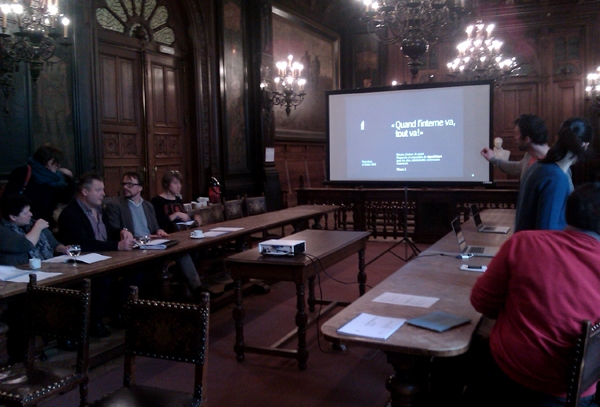
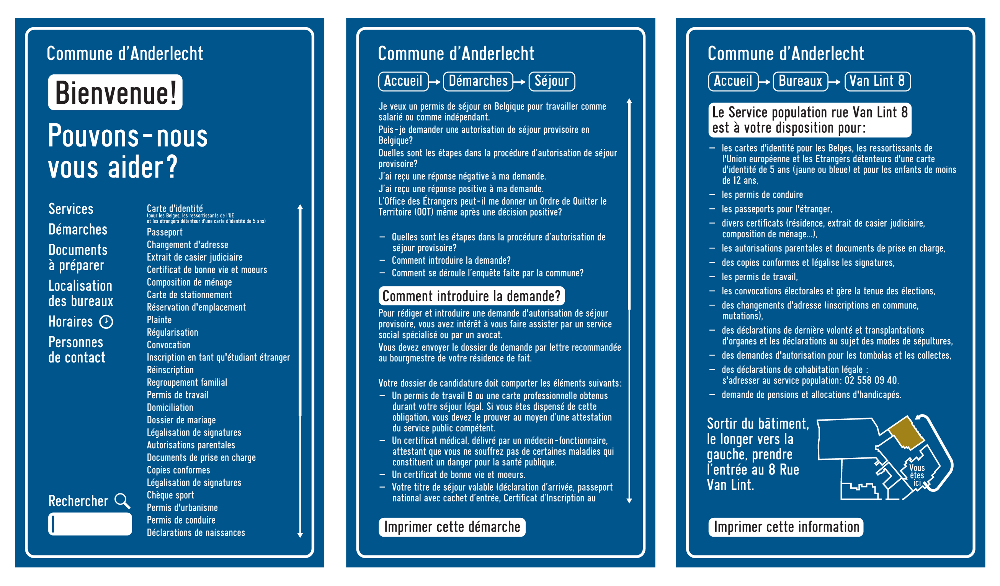
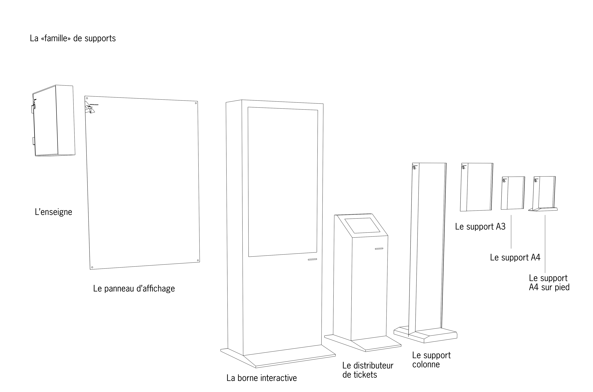
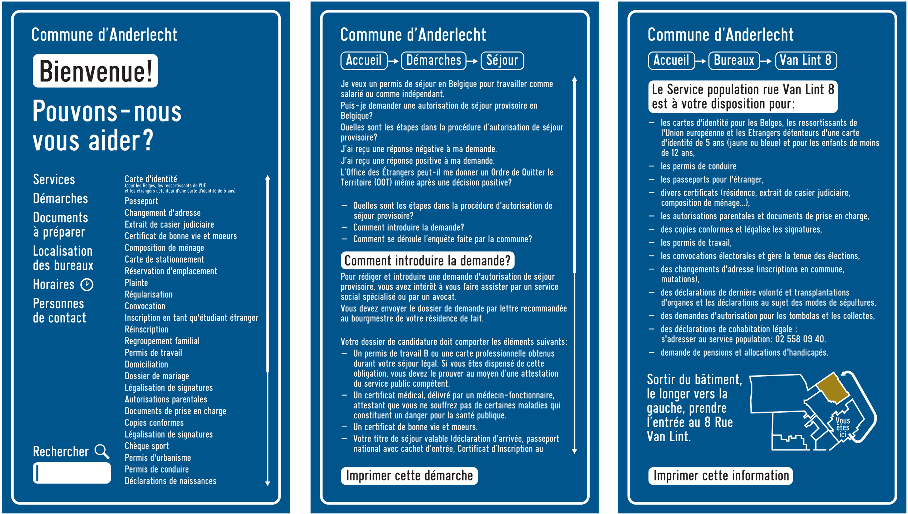
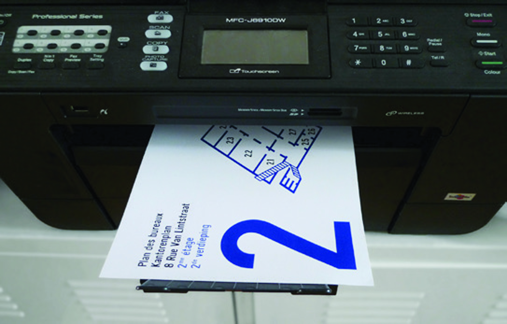
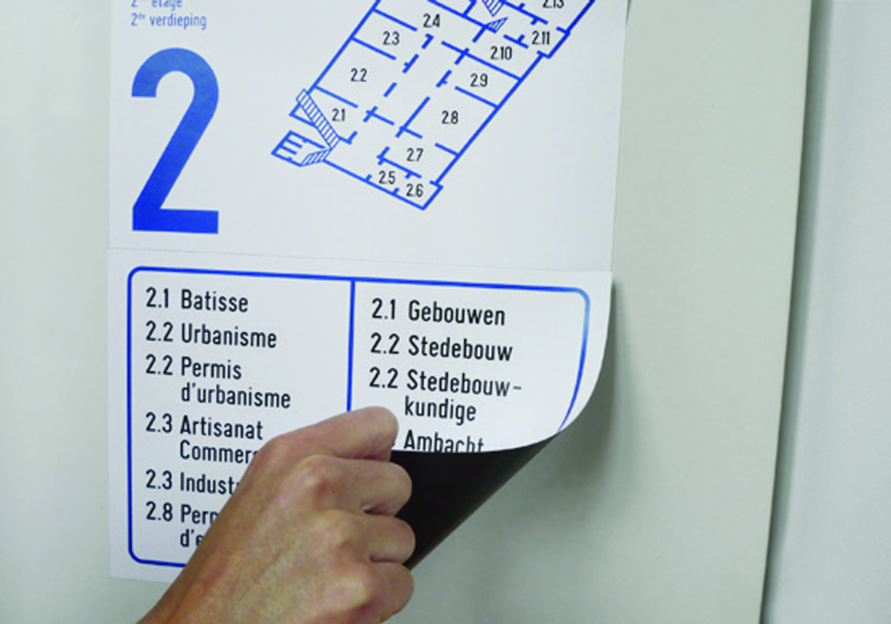

Bouwmeester Brussels
Les différentes perceptions du territoire de la région-ville mis en évidence par un usage décalé de la traditionnelle et commerciale carte routière.
L'usage de la carte à des échelles différentes bouleverse sa lecture habituelle et questionne les a priori qu’elle véhicule.
Mise en relation avec des représentations plus institutionnelles de la cartographie de la Région.
Carte De Rouck à rajouter
Le Maître architecte commence son travail en 2010 sur un territoire peu enclin au questionnement qu’il propose. La proposition cartographique de la mission vise à rendre visible son travail d’interface fin entre les différents acteurs bruxellois. La reprise des codes visuels de la carte routière De Rouck, institution classique bruxelloise, met en évidence les contrastes entre plan (petite échelle) et carte (grande échelle).
Walk in Brussels
Pour comprendre la ville, on a besoin de vision. Les communes d’Anderlecht, Molenbeek-Saint-Jean, d’Etterbeek et de Saint Gilles se sont réunies autour d’un projet de signalétique urbaine et commerciale commun. Cette charte signalétique commerciale et urbaine rend compte d’une signalétique des lieux, des sites, des services, des quartiers commerciaux et toute autre information.
Citadelle de Namur
La cartographie historique et pédagogique pour le nouveau centre du visiteur de la Citadelle de Namur. Le challenge de travailler dans une charge graphique pré-existante et développer en parallèmle des codes visuels fonctionnant pour des cartes issues d'origine dégradées très diverses.
Commune d'Anderlecht

La première phase de diagnostic et d’audit a été réalisée en collaboration avec les habitants de la commune d’une part et les employés communaux d’autre part, par la mise en évidence de leur expertise et de leurs besoins.

La phase de conception du nouveau système a donné naissance à un kit signalétique qui permet de s’intégrer dans la complexité, l’hétérogénéité des lieux.

Une famille de supports en tôle pliée se déploie à des endroits définis sur les différents sites.

Les informations, imprimées sur papier aimanté, peuvent être générées au sein de la commune.

La gestion se fait en interne dans un cadre contrôlé via des gabarits disponibles sur l’intranet communal, mettant fin à la prolifération abusive des A4 imprimés et collés sur chaque mur.

Ce nouveau système répond aux besoins de modularité et d’autonomie de mise à jour de la commune.
Processus de conception et d’amélioration de la signalétique intérieure et extérieure des bâtiments communaux à Anderlecht.
L’étude a conclu sur une charte signalétique, un cahier des charges techniques et des plans.graphique et plans techniques), des plans d’implantation et un budget estimatif.
Plan de mobilité Bruxelles
Architecture moderniste à Bruxelles
Pont de Luttre
Pour la communication de ce contrat de quartier d’une échelle relativement réduite, nous avons opté pour une communication qui met en scène des éléments graphiques du quotidien qu’on peut trouver dans le quartier. Ainsi si la typographie Crickx est dessinée initialement à Schaerbeek, on la trouve en grand nombre dans cette zone. Les panneaux présentant de grandes flèches pointent aussi l’ici, la proximité directe et induisent un rapport direct avec les habitants du quartier. Le manuel de revitalisation se présente comme un mode d’emploi très pratique et concret, insistant sur des processus simples et clairs. L’étude a fourni une charte signalètique, des tracts, un rapport avec des plans d’implantations.
Pavillon du bonheur provisoire
Pavillon français Zaragoza 20XX
Pavillon belge Zaragoza 20XX
Vincent Meessen
Politique des grandes villes
Familial
Faire part Vincent et Amandine
Invitation 60 ans Kathy, 154 versions différentes
Invitation 60 ans Kathy, 154 versions différentes
Invitation 60 ans Kathy, 154 versions différentes
Schémas
Balsamine photos à trouver